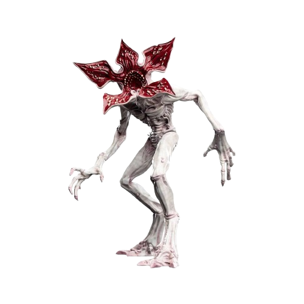

<!DOCTYPE html>
<html lang="fr"></html>
    <head>
        <meta charset="utf-8">
        <title>Strangers things</title>
        <link rel="stylesheet" href="fansite1.css">
    </head>
    <!-- fin de la balise HEAD
    DEBUT DE BODY-->
    <body>
        <!--HEADER-->
        <header>
            
            <nav>
                <div> <!-- liste du menu de navigation-->
                    <a href="inscription1.html" target="_blank"> Inscription</a>
                    <a href="casting.html"> Casting</a>
                    <a href="media.html"> Media</a>
                    </div>
                    <div> <!-- barre de recherche imput-->
                    <input id="cherche" type="search" name="search"/>
                </div>
            </nav>
        </header>
        <main>
            <div class="stranger">
                <h2>Strangers things c'est quoi ?</h2>
            </div>
            <div class="synopsis">  
                <p>
                    Stranger Thing est une série télévisée américaine de science-fiction horrifique, créée par les frères Matt et Ross Duffer et diffusée depuis le 15 juillet 2016 sur Netflix. Elle compte en 2022 quatre saisons et trente-quatre épisodes. Une cinquième et dernière saison a été annoncée le 17 février 2022, celle-ci est prévue pour 2024.
                    L'ambiance de la série est fortement inspirée par les films fantastiques et de science-fiction et horreur des années 1980, puisant ses influences dans les œuvres de H. P. Lovecraft, Steven Spielberg, John Carpenter, John Hughes ou Stephen King2,3.
                    Stranger Things est l'une des séries diffusées en streaming sur Netflix les plus regardées dans le monde4,5,6.
                </p>
            </div>
            <h3>Synopsis</h3>
            <div class="hisoire">
                <p>L'intrigue s'étale sur plusieurs années, entre 1983 et 1986. Un soir de novembre 1983 dans la ville américaine fictive d'Hawkins en Indiana, le jeune Will Byers, âgé de douze ans, disparaît brusquement sans laisser de traces, hormis son vélo. Plusieurs personnages vont alors tenter de le retrouver : sa mère Joyce, ses amis : Lucas Sinclair, Dustin Henderson et Mike Wheeler, guidés par la mystérieuse Eleven, une jeune fille ayant des pouvoirs psychiques, ainsi que le chef de la police Jim Hopper.
                    Parallèlement, la ville est le théâtre de phénomènes surnaturels liés au Laboratoire national de Hawkins, géré par le département de l'Énergie des États-Unis (DoE) et indirectement par la Central Intelligence Agency (CIA), dont les expériences dans le cadre du projet MK-Ultra ne semblent pas étrangères à la disparition de Will..
                </p>
                </div>
            <div class="bande">
               <p> Bande annonce Stranegr Things saison 4</p>
        </div>
        <video width="420" height="340" controls>
                <source src="https://www.youtube.com/watch?v=dXRHyzj3AFc" type=video/ogg> <source src="STRANGER THINGS Saison 4 Bande Annonce VF (NOUVELLE, 2022).mp4   " type=video/mp4>
         </video>
            <div class="videoFAQ">
            <video width="420" height="340" controls>
                <source src="https://www.youtube.com/watch?v=_EvMYEfF_hQ" type=video/ogg> <source src="Stranger Things Cast Answer the Webs Most Searched Questions  WIRED.mp4" type=video/mp4>
            </video>
        </div>
            <div class="demogorgon">
                
            </div>
        <footer>
            <audio autoplay src="Stranger Things  Title Sequence [HD]  Netflix.mp3" controls> 
        </footer>
    </body>
</html>